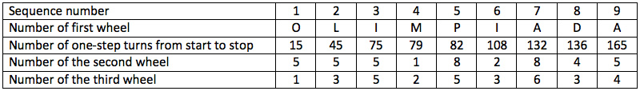

Each of the three axes has one rotating pin and a fixed arrow. The gears are connected in series. On the first gear there are 33 teeth, on the second - 10, on the third - 7. On each tooth of the first gear one symbol or letter of the following string of letters and symbols is written in the clockwise direction in the following order:
A B V C D E F G H I J K L M N O P Q R S T U W X Y Z ! ? > < $ £ €
On the teeth of the second and third gears in increasing order the numbers 0 to 9 and 0 to 6 are written respectively in a clockwise direction. When the arrow of the first axis points to a letter, the arrows of the other two axes point to numbers.
The letters and symbols of the message are encrypted in sequence. Encryption is performed by rotating the first gear anti-clockwise until the first possible letter or symbol that can be encrypted is landed on by the arrow. At this point, the numbers indicated by the second and third arrows are consistently written out. At the beginning of the encryption, the 1st wheel points to the letter A, and the arrows of the 2nd and 3rd wheels to the number 0.
Encrypt the Slavic name OLIMPIADA.
Carefully determine the stopping times after the start of the encryption. For this, assign each letter of the letter/symbol string to its number in sequential order.
We determine the moments of stops after the start of encryption. We number the string of letters/symbols: A - 0, B - 1, etc. The letters of the encoded word will correspond to the numbers: O-15, L-12, I-9, M-13, P-16, A-0, D-4. The stopping moments will be indicated by the number of one-step $($one tooth$)$ corresponding stop.

515355128523864354.